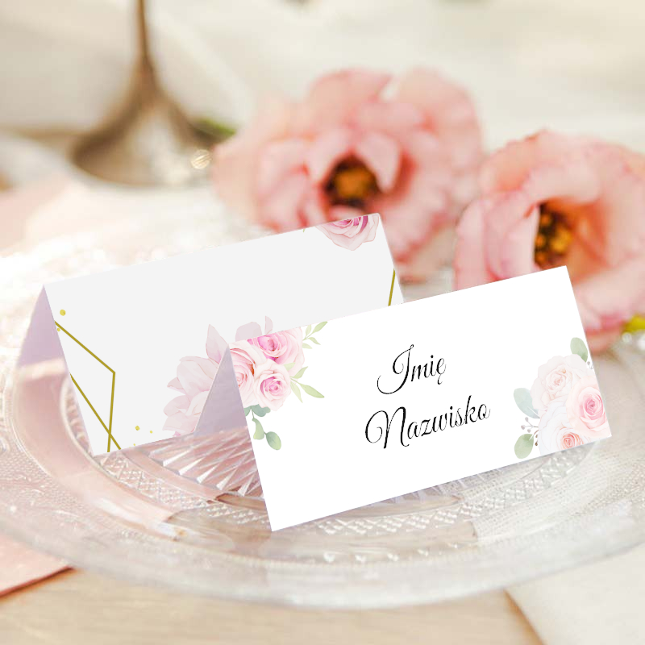
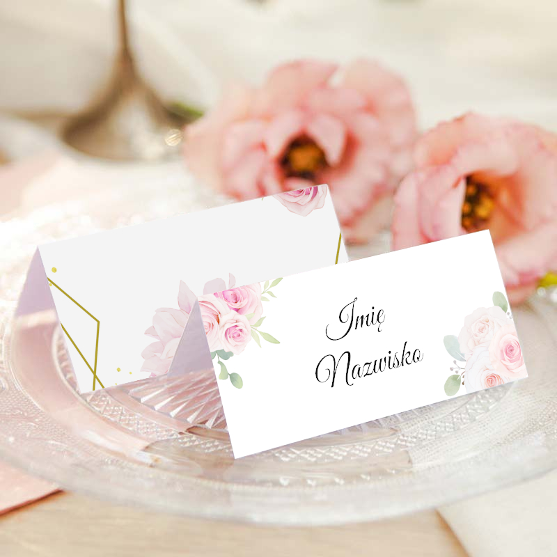

Znajomość języków
Kliknij tutaj
Prezentowany projekt to moja praca inżynierska pod tytułem „Aplikacja mapowa z funkcjonalnością geo–kwestionariusza – szablon portalu geoinformacyjnego”.
Jest to aplikacja internetowa będąca kreatorem portalu geoinformacyjnego umożliwiająca stworzenie dowolnej ankiety w oparciu o dane przestrzenne z podkładem mapowym. Została ona wykorzystana w projekcie naukowym finansowanym przez Narodowe Centrum Nauki pod tytułem "Partycypacyjny paradygmat planowania przestrzennego – identyfikacja stanu oraz budowa modelu partycypacji w planowaniu przestrzennym w polskim dużym mieście" o numerze: 2014/15/B/HS4/00839 kierowanym przez prof. dr hab Jacka Kotusa.
Generator geoankiety
Jest to dashboard dla administratora geoankiety. Pozwala stworzyć geoankietę na dowolny temat, w której kluczowym jest zebranie informacji przestrzennej od ankietowanych. Generator pozwala na ustawienie tytułu samej ankiety oraz umożliwia utworzenie tekstu powitalnego i podziękowania za udział w ankiecie. W czwartym kroku administator ma możliwość określenia ile pytań będzie w geoankiecie oraz jakiego typu będzie do nich odpowiedź. Osoba biorąca udział w badaniu będzie miała możliwość udzielenia odpowiedzi na zadanie pytanie poprzez zaznaczenie konkretnej lokalizacji przy użyciu punktu, linii łamanej lub poligonu. Aby korespondent mógł odróżnić zaznaczenia na mapie, administrator może ustawić różny kolor dla poszczególnych pytań i odpowiedzi. Koleją opcją jest wybranie podkładu mapowego jaki będzie wyświetlał się w geoankiecie oraz przybliżenia startowego, co pozwoli zawęzić obszar na mapie, w którym możliwe będzie udzielenie odpowiedzi.
Po kliknięciu w przycisk GENERUJ GEOANKIETĘ, administrator otrzymuje informacje czy wszystkie dane zostały prawidłowo wypełnione oraz odnośnik do gotowej geoankiety.
Cały generator jest połączony z bazą SQL, w której zapisywane są wszystkie ustawienia administratora.
Panel logowania
Administrator ma możliwość utworzenia dowolnej liczby kont, które będą miały dostęp do pytań zawartych w geoankiecie. Konta należy utworzyć bezpośrednio w dedykowanej bazie danych SQL. Każdy ankietowany przed przystąpieniem będzie musiał najpierw prowadzić dane do logowania.
Dzięki temu rozwiązaniu administrator geoankiety ma możliwość sprawdzenia odpowiedzi danej osoby.
Jeśli projektankt geoankiety uzna, że odpowiedzi na pytania mają być anonimowe, ma możliwość zrezygnowania z panelu logowania.
Panel powitalny
To panel rozpoczynający uczestnictwo w geoankiecie. Korespondent zostaje wprowadzony w tematykę badania w jakim bierze ucział. Tekst powitalny został przygotowany na etapie generowania geoankiety przez administratowa.
Po kliknięciu w przcisk Rozpocznij badanie, korespondent zostanie przesiony do przygotowanych pytań. W prawym górnym rogu mamy informację jaka osoba jest zalogowana do geoankiety. Istnieje również możliwość zrezygnowania z udziału poprzez wylogowanie się.
Geoankieta – odpowiadanie na pytania
Panele z pokładem mapowym to kluczowe elementy geoankiety. To właśnie tutaj jest możliwość odpowiadania na przygotowane pytania. Liczba etapów generowana jest automatycznie oraz jest zależna od liczby przygotowanych pytań. Każdy etap zkłąda się z maksymalnie 2 pytań, aby zaznaczenia na mapie były przejrzyste dla korespondenta.
Po udzieleniu odpowiedzi poprzez zaznaczenie punktu lub narysowanie lini czy obszaru, osoba ma możliwość przejścia dalej aby kontunuować badanie. W każdym momencie może wrócić do porzedniego etapu i zmienić odpowiedź.
Panel końcowy
Panel końcowy to ostatni element geoankiety, w którym użytkownik otrzymuje podziękowanie za udział w przygotowanym badaniu. Tekst tego podziękowania jest możliwy do personalizacji na etapie generatora geoankiety.
Po kliknięciu w przycisk Wyloguj się i zakończ badanie, udzielone odpowiedzi zostają zatwierdzone i przesłane do bazy danych SQL wraz z oznaczeniem, który użytkownik ich udzielił.

Rozpoznanie i nazwanie zwierzęcia lub przedmiotu nie stanowi dla człowieka większego problemu. Jednak czy dla komputera będzie to równie proste, dysponując jedynie zdjęciem czworonoga? Jako, że interesuję się uczeniem maszynowym, nie mogłem przejść obok takiego pytania obojętnie. Postanowiłem sprawdzić czy oraz z jaką skutecznością komputer będzie w stanie rozpoznać gatunek zwięrzęcia przedstawiony na zdjęciu.
Klasyfikacja psów i kotów to jeden ze standardowych projektów głębokiego uczenia z zakresu widzenia komputerowego, który obejmuje klasyfikację realistycznych zdjęć na dwie kategorie. W trakcie realizacji projektu musiałem najpierw załadować i przygotować obrazy do celów treningowych, a następnie rozdzielić zdjęcia na zbiór danych do celu szkolenia i walidacji. Kolejno, użyłem ImageDataGenerator, aby rozszerzyć swój zbiór danych i ograniczyć nadmierne dopasowanie. Opracowałem model CNN za pomocą biblioteki KERAS i wybrałem parametry aby poprawić jego wydajność. W następnym kroku oceniłem wydajność modelu, zapisałem i załadowałem model do dalszych prognoz, a na koniec dokonałem klasyfikacji na zwierzętach będących w mojej rodzinie.
Do realizacji projektu wykorzystałem zbiór danych obejmujący łącznie 25000 zdjęć przedstawiających psy i koty. Ten zbiór danych został po raz pierwszy wprowadzony na potrzeby konkursu Kaggle w 2013 roku.
Zbiór danych jest dostępny tutaj (około 865 MB).

Aby dokonać klasyfikacji obrazów na dwie kategorie: psy i koty, zastosowałem do tego konwolucyjną sieć neuronową (CNN – convolutional neural network).
Architektura modelu:
Warstwy:
Komponenty:

Z sukcesem zbudowałem model głębokiej sieci neuronowej poprzez wdrożenie konwolucyjnej sieci neuronowej (CNN), który uzyskał ponad 6,8 mln parametrów uczących się. Przełożyło się to na uzyskanie bardzo dużej dokładności zaklasyfikowania obrazów na poziomie około 94% zarówno dla psów i kotów.
Po nauczeniu i walidacji modelu przyszedł czas na odpowiedź czy moje zwierzęta to odpowiednio psy i koty. Ostatecznie komputer potwierdził moje zdanie. Pełen sukces.

Wprowadzenie do problematyki projektu:
Cukrzyca jest jedną z najczęściej występujących chorób przewlekłych w Stanach Zjednoczonych, dotykając każdego roku miliony Amerykanów i stanowiąc znaczące obciążenie finansowe dla gospodarki. Cukrzyca to poważna choroba przewlekła, która może prowadzić do obniżenia jakości życia oraz skrócenia oczekiwanej długości życia. Skala tego problemu jest również istotna. Według danych Centers for Disease Control and Prevention (CDC) w 2018 roku 34,2 miliona Amerykanów miało cukrzycę, a 88 milionów miało stan przedcukrzycowy. Co więcej, CDC szacuje, że 1 na 5 chorych na cukrzycę i około 8 na 10 osób z prediabetes (stanem przedcukrzycowym) nie jest świadomych swojego ryzyka.
Chociaż cukrzycy nie da się wyleczyć całkowicie, strategie takie jak utrata wagi, zdrowe odżywianie, aktywność fizyczna oraz leczenie farmakologiczne mogą złagodzić skutki tej choroby u wielu pacjentów. Wczesna diagnoza może prowadzić do zmian stylu życia i skuteczniejszego leczenia, co sprawia, że modele predykcyjne oceny ryzyka cukrzycy są ważnym narzędziem dla lekarzy i urzędników zdrowia publicznego.
Opis zbioru danych użytego w projekcie:
System Monitorowania Czynników Ryzyka Zachowań Zdrowotnych (BRFSS) to coroczna ankieta telefoniczna dotycząca zdrowia, zbierana przez CDC. Każdego roku ankieta gromadzi odpowiedzi od ponad 400 000 Amerykanów we wszystkich 50 stanach na temat ryzykownych zachowań zdrowotnych, przewlekłych schorzeń oraz korzystania z usług profilaktycznych. BRFSS jest prowadzony nieprzerwanie od 1984 roku, co czyni go największym nieprzerwanie prowadzonym systemem ankiet zdrowotnych na świecie.
W ramach tego projektu użyto pliku w formacie SAS z danymi dostępnymi na stronie CDC dla roku 2019. Oryginalny zbiór danych zawiera odpowiedzi od 418268 osób i składa się z 342 cech. Te cechy to pytania bezpośrednio zadawane uczestnikom lub zmienne obliczone na podstawie indywidualnych odpowiedzi uczestników.Link do danych
Na potrzeby tej analizy tylko spośród wszystkich cech uwzględnione zostały tylko te czynniki, które są związane z czynnikami ryzyka cukrzycy. W wyborze odpowiednich cech bardzo pomocna była praca badawcza autorstwa Zidian Xie pt. „Building Risk Prediction Models for Type 2 Diabetes Using Machine Learning Techniques” z 2014 roku.
Cel projektu:
Głównym celem tego projektu jest odpowiedź na pytanie:
Czy pytania z ankiety BRFSS mogą dostarczyć dokładnych przewidywań dotyczących tego, czy dana osoba choruje na cukrzycę?
Wyniki:
Najlepszy wynik dla każdej metryki został osiągnięty przez XGBoostClassifier wyuczony na nadpróbkowanym zbiorze danych.
Zdięcie wykonane przezmacrovectorz Freepik.

Projekt, którego celem było prognozowanie cen domów to idealny konkurs dla osób zajmujących się nauką o danych, którze chcą poszerzyć swoje umiejętności z zakresu uczenia maszynowego. Dlatego i ja postanowiłem przystąpić tego projektu z www.kaggle.com.Link do danych
Opis danych użytych w projekcie:
Zbiór danych zawiera 79 różnych zmiennych opisujących (prawie) każdy aspekt domów mieszkalnych w Ames w stanie Iowa, m.in.:
Celem ćwieczenia było rozwinięcie umiejętności w budowie kreatywnych funkcji oraz przede wszystkim zapoznanie się z zaawansowanymi technikami regresji. Finalnie przy wykorzystaniu najlepszego modelu przewidzieć cenę domu mieszkalnego.
Opracowałem wiele modeli regresji, zarówno ich podstawowe wersje oraz wersje z wyszukanymi hiperparametrami. Najlepszym modelem okazał się ElasticNet z hiperparametrami, który uzyskał RMSE na poziomie 0.1169 oraz R-Squered na poziomie 0.915.
Zdięcie wykonane przezfreepikz Freepik.

Zarys historyczny:
Historia katastrowy Tytanika jest chyba wszystkim znana. Był to luksusowym brytyjski liniowiec, który zatonął podczas swojego dziewiczego rejsu z Southampton do Nowego Jorku w 1912 roku. Był to największy statek pasażerski w tamtych czasach, a jego konstrukcja była uważana za cud techniki, co sprawiło, że wielu ludzi wierzyło, iż jest „niezatapialny”.
Titanic wyruszył z ponad 2200 pasażerami i członkami załogi na pokładzie. Wśród pasażerów znajdowały się osoby różnych klas społecznych, od najbogatszych ludzi tamtych czasów po emigrantów szukających lepszego życia w Ameryce.
W nocy 14 kwietnia 1912 roku Titanic zderzył się z górą lodową na północnym Atlantyku. W wyniku kolizji statek doznał poważnych uszkodzeń i zaczął tonąć. Katastrofa pochłonęła życie ponad 1500 osób, co uczyniło ją jedną z największych tragedii morskich w historii. Tylko około 700 osób przeżyło, głównie dzięki szalupom ratunkowym.
Katastrofa Titanica stała się tematem wielu badań, również w analizie danych czy machine learningu.
Opis danych użytych w projekcie:
Ten projekt jest związany z konkursem „Titanic: Machine Learning from Disaster” na platformie Kaggle. Jest jednym z najpopularniejszych i najczęściej polecanych projektów dla początkujących data scientistów i analityków danych. W ramach tego konkursu uczestnicy mają za zadanie przewidzieć, którzy pasażerowie Titanica przeżyli katastrofę, a którzy niestety nie, na podstawie dostarczonych danych. Zbiór danych użyty w projekcie zawiera 10 zmiennych, które powinny pomóc osiągnąc cel.Link do danych
Kluczowe Cechy Zbioru Danych:
Wyniki:
Po dogłębnym przeanalizowaniu wszystkich zmiennych oraz po wyczyszczeniu danych przystąpiłem do budowania modeli klasyfikacyjnych. W moim przypadku najlepszym modelem okazał się VotingClassifier. Model osiągnął wynik cross-validacji na poziomie około 83.6 %.
Zdięcie wykonane przezvectorpouchz Freepik.
Pomysł utworzenia własnej strony internetowej w stylu portfolio narodził się już dawno temu. Impulsem do działania była m.in. chęć podzielenia się z innymi osobami samodzielnie zrealizowanymi projektami z różnych kategorii. Z uwagi na to, że ciężko jest przedstawić swoje dokonania na kartce papieru w formacie A4, postanowiłem zbudować tę stronę. Jest ona swego rodzaju rozbudowanym interaktywnym życiorysem, w którym umieściłem informacje o sobie, zdobytym doświadczeniu zawodowym i wykształceniu, a także projekty wraz z odnośnikami do ich kodu źródłowego.
Strona jest responsywna. Starałem się przygotować ją tak aby prawidłowo uruchamiała się na każdym urządzeniu. Planuję stale aktualizować wszystkie informacje jakie się tutaj znajdują oraz dodawać nowe projekty, zarówno ukończone jak i w trakcie realizacji.
Niedawno na stronie pojawiła się nowa funkcjonalność, mianowicie możliwość uruchomienia strony w wersji w języku angielskim. W przyszłości możliwe, że pojawi się nowa pozycja w menu – Blog, w którym będę umieszczał ciekawe nowinki z branży GIS oraz Data Science czy też popularnego teraz AI.
Jeśli chcesz się ze mną skontaktować zapraszam do sekcji Kontakt.


Projekt realizowany w ramach utrwalania wiedzy zdobytej w trakcie Bootcampu Data Science PRO. Jest to mały projekt typu web scraping, którego głównym celem było automatyczne pobranie danych przy użyciu języka python oraz biblioteki BeautifulSoup.
Z uwagi na moje zainteresowanie dbaniem o własne finanse osobiste oraz inwestowaniem w różne aktywa, w tym kryptowaluty, za cel obrałem stronę internetową – www.crypto.com, która zawiera aktualny kurs wszystkich kryprowalut.
Projekt zakładał pobranie danych ze strony dla 500 pierwszych coinów oraz zapisanie ich do arkusza kalkulacyjnego Excel.
Zdjęcie wykonane przezfreepikz Freepik.
Generator haseł to jeden z podstawowych projektów, jakie robi się podczas nauki programowania przeróżnych języków. Tak też było w moim przypadku w czasie nauki Pythona.
Aplikacja zakładała, że użytkownik poda kilka informacji:
Dla jakiej strony/aplikacji zamierza utworzyć hasło
Jakią nazwę użytkownika przypisuje do tego hasła
Jaką minimalną długość ma mieć wygenerowane hasło
Czy w haśle mają znajdować się liczby
Czy w haśle mają znajdować się znaki specjalne
Wygenerowane hasła trafiają do pliku. W przyszłości istnieje możliwość rozbudowania tej opcji zastępując zwykły plik TXT np. bazą danych chronioną hasłem.
Nie chciałem aby ten generator był klasycznym projektem jakich wiele. Dlatego postanowiłem utworzyć tez w pythonie do niego proste GUI.
Zdięcie wykonane przezfreepikz Freepik.

Realizowanie projektów graficznych sprawia mi przyjemność, zwłaszcza jeśli mogę w ten sposób pomóc przyjaciołom. Tak też było w tym przypadku. Projekt dotyczył zaprojektowania zaproszeń ślubnych w formacie A5 wraz z winietkami jakie miały znaleźć się na stołach oraz etykietami na upominki od pary młodej dla gości.
Zaproszenia miały być w tematyce leśnej, bo w takiej scenerii odbywał się również ślub oraz przyjęcie.
Źródła szaty graficznej:
Tło użyte w projekcie – pastelowy las:
Ikony użyte w projekcie:
Czcionka użyta w projekcie:


Realizowanie projektów stricte graficznych sprawia mi przyjemność, zwłaszcza jeśli mogę w ten sposób pomóc przyjaciołom. Tak też było w tym przypadku. Projekt dotyczył zaprojektowania zaproszeń ślubnych w formacie A5 wraz z winietkami jakie miały być znaleźć się na stołach.
Zaproszenia miały być w tematyce kwiatów z przeważającym kolorem różowym.
Źródła szaty graficznej:
Tło użyte w projekcie – ramka oraz kwiaty:
Ikony użyte w projekcie:
Czcionka użyta w projekcie:

 


Projekt dotyczył stworzenie nowego Loga oraz wizytówek dla firmy świadczącej usługi geodezyjnej.
Logotyp miał zawierać imię i nazwisko osoby prowadzącej jednoosobową działalność gospodarczą oraz jednoznacznie kojarzyć się z geodezją. Dlatego litera A przedstawia instrument geodezyjny – tachimetr, natomiast litera I została wykonana na wzrór łaty geodezyjnej.
Specjalista ds. GIS, Analityk danych oraz pasjonat Data Science i uczenia maszynowego z Krakowa, Polska
Imię i nazwisko
Mateusz WuchnickiUrodziny
1 lutego 1994Adres
Kraków, PolskaTelefon
+48 574 270 864Jestem wykwalifikowanym inżynierem z ponad siedmioletnim doświadczeniem. Brałem czynny udział w wielu projektach komercyjnych i badawczo–rozwojowych. Wykonywałem wiele analiz przestrzennych, opracowywałem ortofotomapy, modele terenu oraz chmury punktów pochodzące z lotniczego skaningu laserowego, a także pisałem sprawozdania techniczne. Byłem odpowiedzialny między innymi za planowanie, monitorowanie i koordynowanie misji lotniczych, których celem było pozyskanie wysokorozdzielczych zdjęć lotniczych i chmury punktów ALS. Posiadam wyjątkowe umiejętności analityczne, organizacyjne, planistyczne i komunikacyjne oraz skoncentrowane podejście do pracy w ustrukturyzowanym środowisku. Poszukuję pracy, w której wykorzystam moje umiejętności i będę mógł dalej się rozwijać w szerokopojętej branży GIS.
– Mark Twain
W wewnątrznej strukturze firmy pełniłem funkcję menagera do spraw technicznych w dziale technologii lotniczych. Byłem odpowiedzialny za sprawne działanie i merytoryczne wsparcie zespołu analityków oraz personelu technicznego. Równocześnie sprawowałem funkcję nadzoru operacyjnego misji lotniczych.
Do moich obowiązków należało:
Praca w działe technologii lotniczych, w których uczestniczyłem w wielu projektach fotogrametrycznych oraz badawczych. Pełniłem funkcję nadzoru operacyjnego misji lotniczych zapewniając efektywne i bezpieczne przeprowadzenie operacji lotniczych w celu pozyskania zdjęć lotniczych oraz wykonania skaningu laserowego.
Do moich obowiązków należało:
Pracując w dziele GIS rozwinąłem swoje umiejętności z zakresu przetwarzania danych wektorowych i rastrowych. Poznałem oprogramowanie oraz techniki opracowywania danych przestrzennych. W trakcie pracy na tym stanowisku, przeniosłem się do działu technologii lotniczych.
Do moich obowiązków należało:
Pracę rozpocząłem po ukończeniu I stopnia studiów. W trakcie stażu uczestniczyłem w wielu projektach GISowych tj. kartowanie największego Arboretum w Polsce, aktualizacja i opracowywanie MPZP, przetwarzanie zdjęć lotniczych dla projektu NCBiR.
Do moich obowiązków należało:
Trzy miesięczny staż w branży fotogrametrycznej, w trakcie którego dobrze nauczyłem się tworzyć modele 3D oraz pracy z chmurą punktów pochodzącą ze skaningu laserowego.
Do moich obowiązków należało:
Trzy miesięczny staż w branży geodezyjnej, w trakcie którego poznałem narzędzia do projektowania map i baz danych. Udoskonaliłem swoje umiejętności posługiwania się instrumentami geodezyjnymi.
Do moich obowiązków należało:
Intensywny, połroczny kurs Data Science, dzięki któremu sprawnie posługuję się językiem python oraz jego bibliotekami służącymi do analizy danych.
Nabyte umiejętności:
Nabyte umiejętności:
Nabyte umiejętności:
Innowacyjne kompetencje geografa na współczesnym rynku pracy: wysokiej jakości program stażowy dla studentów nauk o Ziemi na Wydziale Nauk Geograficznych i Geodezyjnych na Uniwersytecie im. Adama Mickiewicza w Poznaniu.
Temat pracy inżynierskiej: „Aplikacja mapowa z funkcjonalnością geokwestionariusza – szablon portalu geoinformacyjnego”
Aplikacja internetowa będąca kreatorem portalu geoinformacyjnego umożliwiająca stworzenie dowolnej ankiety w oparciu o dane przestrzenne z podkładem mapowym. (Technologie: HTML, CSS, JavaScript, PHP)
– Thomas Jefferson
Kliknij tutaj
Polski (ojczysty), Angielski (B2)
Python
SQL, PostgreSQL
GitHub
HTML, CSS
Kliknij tutaj
NumPy, Pandas, Scikit-learn, SciPy, Seaborn, Matplotlib
Pozyskiwanie i procesowanie danych, czyszczenie danych, wizualizacja danych, analiza jednoczynnikowa i dwuwymiarowa, wykrywanie wartości odstających, testowanie statystyczne
Regresja liniowa i logistyczna, SVM, drzewa decyzyjne, lasy losowe, algorytm XGBoost, analiza skupień
Transformacje danych, schematy ewaluacji, optymalizacja hiperparametrów, automatyzacja procesu modelowania (pipelines), walidacja modeli
Kliknij tutaj
PyCharm, Jypiter Notebook, Google Colaboratory, R Studio
ArcGIS, QGIS, PostGIS, GeoServer, Globbal Mapper
Trimble Inpho, TerraSolid, Agisoft Metashape, Riegl Software, Inertial Explorer, iX Capture, CATALYST od PCI Geomatics
AutoCAD, Adobe XD, Gimp 2, Photoshop
Kliknij tutaj
Płynnie komunikuję się (w formie pisemnej i ustnej) ze współpracownikami i klientami
Potrafię spokojnie przeanalizować sytuację i zidentyfikować możliwe rozwiązania
Potrafię efektywnie zarządzać wieloma zadaniami jednocześnie
Jestem świadomy konsekwencji swoich decyzji
Posiadam łatwość współpracy z innymi, aby osiągnąć wspólny cel
Potrafię dostosować się do zmieniających się potrzeb projektowych
Samodzielnie wykonuję powierzone mi zadania
Potrafię rozwiązywać konflikty, monitorować postępy i utrzymać harmonię w grupie
Jestem pewny swoich umiejętności zawodowych, swobodnie wyrażam swoje opinie
Skrupulatnie i dokładnnie wykonuje obowiązki
Kliknij tutaj
Microsotf Windows, MacOS
Slack, Discord, Skype, Teems, Zoom
Jira, Confluence, Trello, Dropbox, TimeCamp, Manic
Outlook, Thunderbird, Gmail
Excel, Word, PowerPoint, OneNote
– Koby Bryant
– Pitagoras